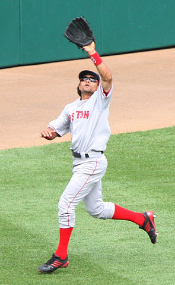
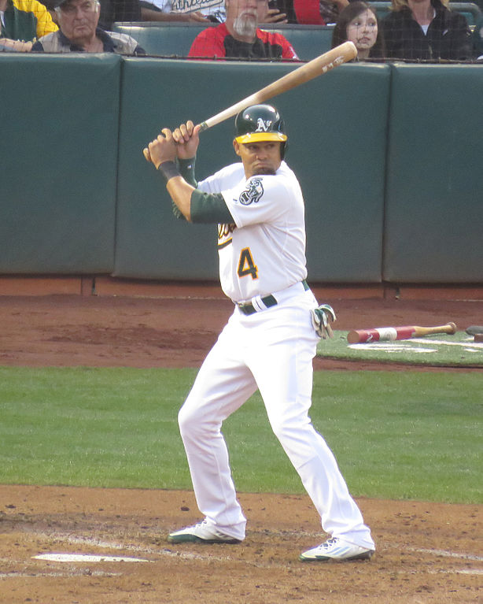

Biography
Covelli “Coco” Crisp was born in Los Angeles on November 1, 1979. His father was a fast food owner and former boxer, his mother was a former sprinter. His nickname derived from his sister telling him he looked like one of the characters on the cocoa krisps cereal box. When he began playing baseball, he listed Coco on a “get to know your teammates” questionnaire and the nickname has stuck ever since.
He began playing for the St. Louis Cardinals in 1999, eventually playing in four different leagues from 1999 to 2001. He was the 2001 Minor League Player of the Year. He was then traded to the Cleveland Indians in 2002, playing center fielder. He was a great fielder and a fast baserunner. In 2006, Coco signed a $15.5 million contract with the Boston Red Sox, however, at the time he was battling an off-season surgery to his left index finger. On June 4, 2008, Coco was trying to steal second base when the Ray’s shortstop purposely placed his knee in front of the base to try to stop Coco from stealing. Some people thought this was a dirty move and caused controversy.
At the end of 2009, Coco was traded to the Kansas City Royals, but didn’t stay long. After the 2009 season, he signed a one-year contract with the Oakland Athletics worth $5 million. He enjoyed his time with the A’s so he stayed on with them until the end of the 2015 season. After this, he returned back to the Cleveland Indians. He went to battle in the world series against the Chicago Cubs but unfortunately lost in game 7. Following the 2016 season, he left the industry after failing to meet contractual obligations. In 2017, he became the head coach of the Shadow Hills High School baseball team.